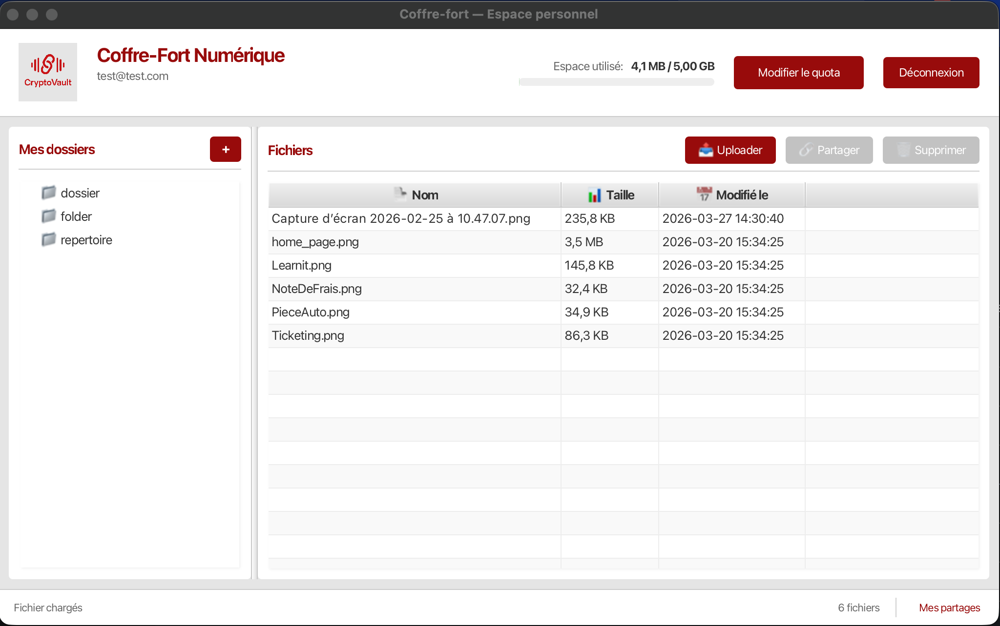
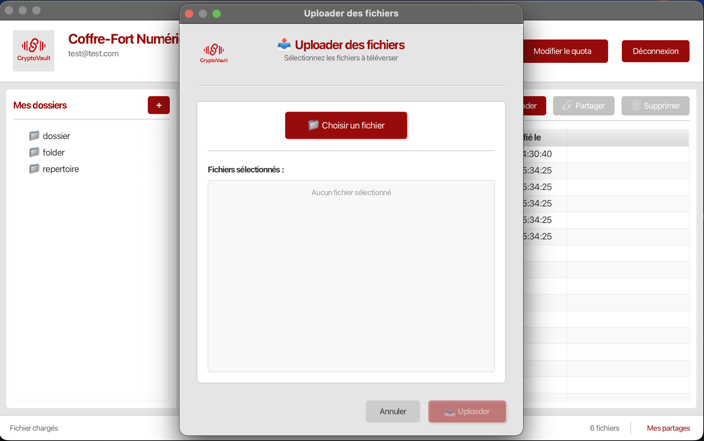
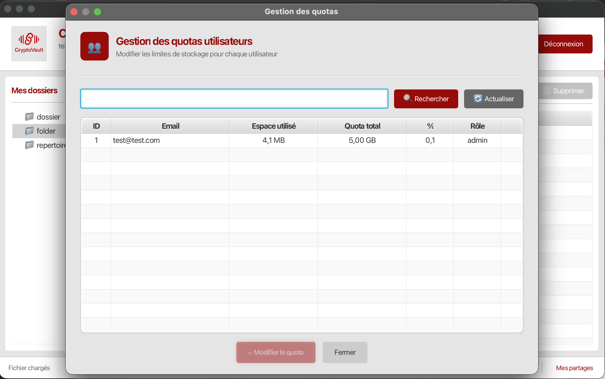
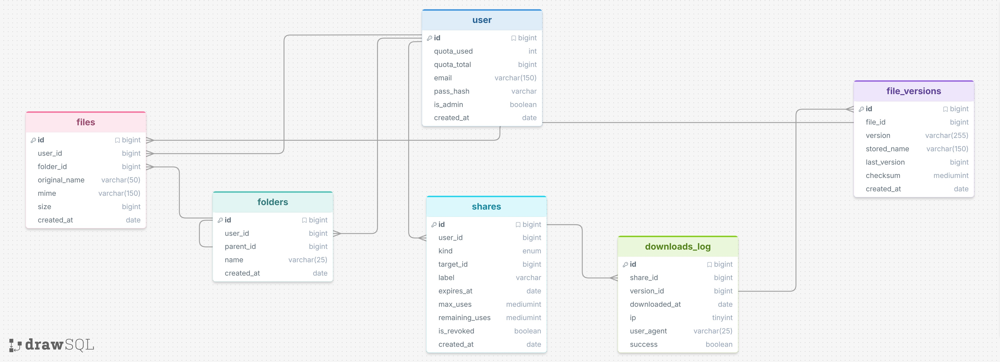

CryptoVault
Coffre-fort numérique sécurisé — Backend REST PHP + Client desktop JavaFX — Projet BTS SIO SLAM
Captures d'écran
Défilement automatique · Naviguez avec les flèches
Vue d'ensemble
CryptoVault est un système complet de coffre-fort numérique composé de deux composants complémentaires : un backend REST PHP assurant le stockage chiffré des fichiers, et un client desktop JavaFX offrant une interface native multi-plateforme.
Le projet met en œuvre des techniques avancées de sécurité : chiffrement AES-256-GCM au repos avec enveloppe de clés (KEK), authentification JWT, versionnage automatique avec checksum SHA-256, partages sécurisés par tokens signés et audit complet des accès.
Backend PHP
API REST Slim 4 · 38 routes · Medoo ORM · Docker
Client JavaFX
Java 17+ · OkHttp · Jackson · Maven · Interface native
Sécurité
AES-256-GCM · JWT · KEK · SHA-256 · Audit logs
Backend — API REST PHP
L'API REST est construite avec Slim Framework 4.12 et Medoo 2.2. Elle expose 38 routes couvrant l'ensemble des opérations métier, de l'authentification à la gestion des quotas.
- Chiffrement AES-256-GCM au repos — IV et auth tag par version
- Enveloppe de clés KEK : la clé de chiffrement est elle-même chiffrée
- Authentification JWT via Firebase PHP-JWT avec middleware dédié
- Organisation hiérarchique des dossiers avec contraintes CASCADE
- Versionnage automatique : checksum SHA-256, IV et auth tag par version
- Partages sécurisés : token base64url, expiration, limitation d'usages, révocation
- Gestion des quotas utilisateur avec blocage automatique à 100 %
- Table
audit_logs: IP, user-agent, action — traçabilité complète - Rôle administrateur : gestion des utilisateurs, suppression CASCADE

Menu & arborescence de dossiersClient — Application Desktop JavaFX

Dialogue d'upload avec barre de progressionLe client lourd JavaFX 21 communique avec l'API via OkHttp 4.12 et propose une interface native réactive avec surveillance automatique de session JWT.
- Surveillance JWT toutes les minutes — déconnexion automatique à expiration
- Arborescence
TreeViewavec menu contextuel complet - Upload / download avec barre de progression, streaming grands fichiers
- Historique complet des versions — checksum SHA-256, téléchargement sélectif
- Gestion des partages : création, expiration, limitation d'usages, révocation
- Barre de quota avec alertes visuelles à 80 % (orange) et 90 % (rouge)
- Panneau d'administration : gestion des quotas et des utilisateurs
Gestion des quotas & Administration
Le panneau d'administration permet à l'administrateur de gérer les quotas par utilisateur, visualiser l'occupation globale du stockage et effectuer des suppressions en cascade sécurisées.
- Quota par utilisateur configurable depuis le panneau admin
- Blocage automatique des uploads à 100 % d'occupation
- Alertes visuelles progressives : orange à 80 %, rouge à 90 %
- Protection contre l'auto-suppression administrateur
- Suppression cascade : dossiers, fichiers, versions, partages nettoyés

Panneau d'administration des quotasArchitecture
Les deux composants suivent le pattern MVC. L'API REST utilise
des Repositories Medoo en couche d'accès aux données ; le client JavaFX
sépare les vues FXML, les contrôleurs annotés @FXML et les modèles
POJO mappés via Jackson.
@FXML- Stockage physique chiffré dans
storage/files/{user_id}/ - Base de données avec triggers et contraintes CASCADE complètes
- Containerisation Docker Compose : PHP-FPM + Nginx + MySQL
Modèle Physique de Données
La base de données a été conçue avec la méthode Merise (MCD → MLD → MPD). Le MPD définit l'ensemble des tables, clés primaires, clés étrangères et contraintes d'intégrité du système de coffre-fort numérique.
- Tables principales :
users,folders,files,file_versions - Tables de liaison :
shares,audit_logs - Contraintes
CASCADEsur les suppressions — dossiers, fichiers, versions et partages nettoyés - Champ
ivetauth_tagpar version — intégrité AES-256-GCM garantie - Champ
checksumSHA-256 par version — détection d'altération des données au repos - Respect de la 3NF — aucune redondance, dépendances fonctionnelles directes

MPD — modélisation Merise de la base de donnéesSécurité
AES-256-GCM
Chaque version possède son propre IV et auth tag. Intégrité garantie à chaque lecture.
Enveloppe KEK
La clé de chiffrement (DEK) est elle-même chiffrée par une Key Encryption Key (KEK).
JWT
Vérification d'expiration côté client ET serveur. Renouvellement automatique toutes les minutes.
Tokens de partage
base64url (~43 chars), non devinables. Expiration, limite d'usages et révocation immédiate.
SHA-256
Checksum SHA-256 par version de fichier — détection de toute altération des données au repos.
Audit logs
Traçabilité complète : chaque action est enregistrée avec IP, user-agent et horodatage.
Technologies utilisées
| Composant | Technologie | Version |
|---|---|---|
| Client desktop | Java + JavaFX | 17+ / 21.0.2 |
| Build client | Maven | 3.8+ |
| Client HTTP | OkHttp | 4.12.0 |
| Sérialisation JSON | Jackson | 2.17.2 |
| Backend API | PHP + Slim Framework | 8.2+ / 4.12 |
| ORM micro | Medoo | 2.2 |
| Authentification | Firebase PHP-JWT | 6.11 |
| Chiffrement | AES-256-GCM (OpenSSL) | — |
| Base de données | MySQL | 8.0 |
| Containerisation | Docker + Docker Compose | — |
| Versionning | Git | — |
Compétences mobilisées
- Concevoir et implémenter une API REST sécurisée avec authentification JWT
- Appliquer le chiffrement symétrique AES-256-GCM sur des données au repos
- Développer une application desktop multi-plateforme avec JavaFX et Maven
- Mettre en œuvre le pattern MVC dans deux contextes techniques différents
- Gérer le versionnage de fichiers avec intégrité SHA-256
- Containeriser un backend avec Docker et Docker Compose
- Concevoir un modèle de données relationnel avec contraintes CASCADE
- Implémenter un système d'audit et de traçabilité complet